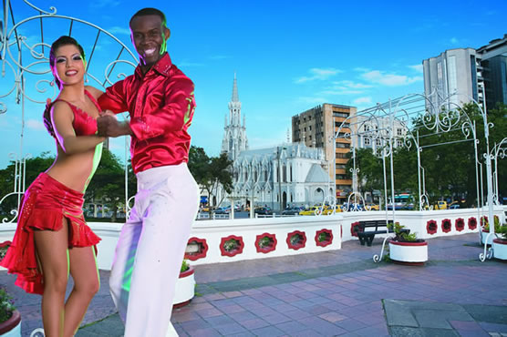
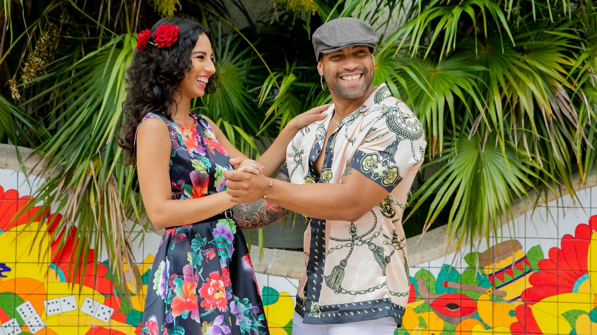
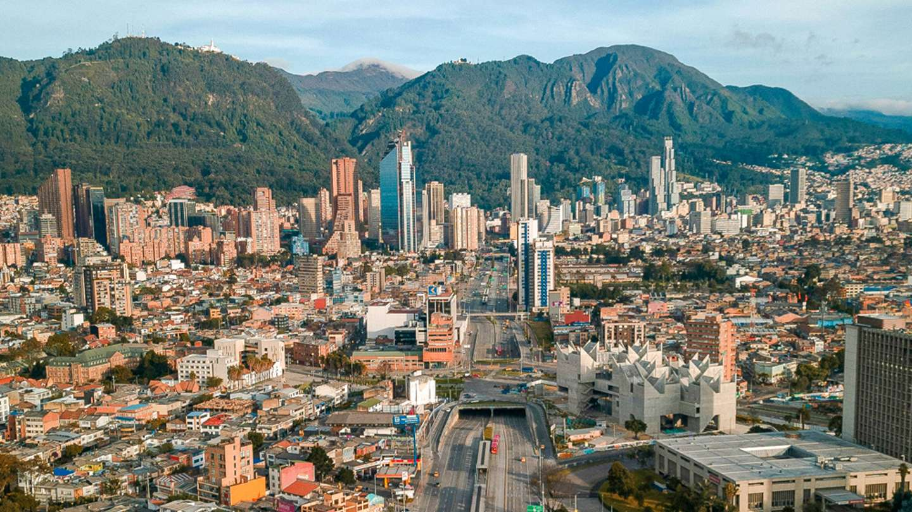
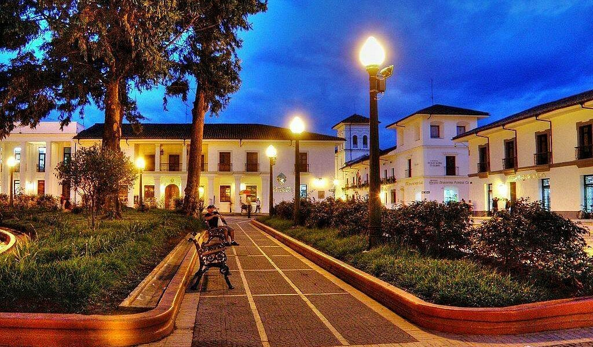
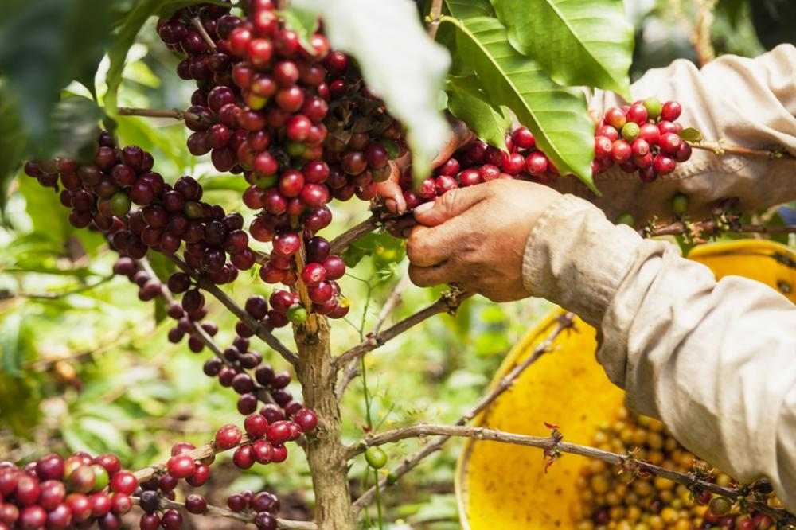
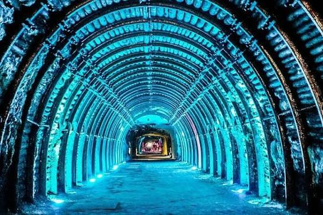

Idée voyage en petit groupe · 16 jours / 15 nuits
Colombie · Salsa à Cali 2027
De Bogotá à Cali · Festival Mundial de Salsa
Demander un devis gratuitDe Bogotá à Cali, un voyage au rythme de la salsa
Ce séjour de 16 jours combine la richesse culturelle de Bogotá et l'énergie vibrante de Cali, capitale mondiale de la salsa. Après une immersion dans les trésors andins (Cathédrale de Sel, Musée de l'Or, Monserrate), vous rejoignez Cali pour le Festival Mundial de Salsa. Cours avec des professeurs locaux, soirées dans les clubs mythiques, et deux excursions exceptionnelles : la ville blanche de Popayán et une finca cafetière traditionnelle.
Les temps forts de votre séjour

🎵 Festival Mundial
- Concerts des meilleurs orchestres
- Compétitions internationales
- Spectacles de salsa sur scène
- Ambiance festive garantie

💃 Cours de salsa
- Professeurs locaux expérimentés
- Tous niveaux bienvenus
- Technique et style caleño
- Pratique immédiate en soirée

🏛️ Bogotá culturelle
- Quartier colonial de la Candelaria
- Musée de l'Or (trésors précolombiens)
- Mirador de Monserrate (3 152 m)

🏛️ Popayán la Blanche
- Ville coloniale classée UNESCO
- Églises baroques et ruelles pavées
- Gastronomie caucana
- Ambiance religieuse et culturelle

☕ Finca cafetière
- Visite d'une hacienda traditionnelle
- Découverte du processus de production
- Dégustation de café colombien
- Immersion dans la culture caféière

⛪ Cathédrale de Sel
- Merveille architecturale souterraine
- Excursion à Zipaquirá
- Lumière mystique et spiritualité
- Site unique au monde
Vivez la salsa caleña
À Cali, la salsa n'est pas qu'une danse, c'est un mode de vie. Laissez-vous emporter par le rythme endiablé de la capitale mondiale de la salsa.
Votre itinéraire jour par jour
Semaine 1 : Bogotá, capitale andine
Arrivée à Bogotá
Formalités d'arrivée et première découverte à votre rythme du quartier historique de la Candelaria, ses rues pavées et ses maisons coloniales colorées.
Cœur culturel de Bogotá
Visite du célèbre Musée de l'Or (plus de 30 000 pièces précolombiennes) et montée au Mirador de Monserrate (3 152 m) pour une vue panoramique vertigineuse sur la ville.
La Cathédrale de Sel
Excursion à Zipaquirá pour découvrir cette merveille architecturale souterraine, taillée à même le sel. Lumière mystique et spiritualité unique au monde.
Légende de l'Eldorado
Direction la lagune sacrée de Guatavita, berceau de la légende de l'Eldorado. Repas champêtre près de la « Maison folle » (La Casa Loca) et retour à Bogotá.
Cap sur Cali
Vol intérieur Bogotá → Cali (1h15). Installation à l'hôtel dans le quartier de Granada ou San Antonio. Première soirée libre pour découvrir l'ambiance caleña.
Semaine 2 : Festival Mundial de Salsa
Ouverture du Festival Mundial
Cérémonie d'ouverture du Festival Mundial de Salsa. Grand concert inaugural avec des orchestres internationaux. L'ambiance festive envahit toute la ville de Cali.
Compétitions et spectacles
Journée dédiée aux compétitions de salsa (solo, couple, groupes) et spectacles sur scène. Cours collectifs avec des maestros reconnus. Soirée : concerts et bals jusqu'au matin.
Découverte de Cali & premiers pas de salsa
Visite guidée du centre-ville : Plaza de Cayzedo, Parc des Perroquets, quartier bohème de San Antonio. Après-midi : premier cours de salsa avec professeurs locaux. Soirée : initiation aux clubs de Juanchaco.
Le cœur du Festival
Journée intense au cœur du Festival : ateliers avec des maestros reconnus, démonstrations et grandes soirées de gala avec les meilleurs orchestres de salsa du monde.
Perfectionnement salsa & Musée de la Salsa
Cours avancés de salsa caleña (style rapide et technique). Visite du Musée de la Salsa pour comprendre les racines du rythme. Soirée libre pour pratiquer dans les salons recommandés.
Clôture du Festival & Juanchaco
Grande soirée de clôture du Festival Mundial. Retour dans le quartier de Juanchaco pour une soirée légendaire dans les clubs mythiques de la salsa populaire caleña.
Immersion à Llanogrande
Journée dédiée aux quartiers emblématiques de la salsa : visite des salons mythiques (Tin Tin Deo, La Topa Tolondra). Cours sur place et déjeuner typique. Soirée : immersion totale dans l'ambiance salsera authentique.
Semaine 3 : Excursions autour de Cali
Excursion : Popayán la Blanche
Journée dans la capitale religieuse de la Colombie, célèbre pour son architecture coloniale immaculée classée UNESCO. Ruelles pavées, églises baroques et gastronomie caucana. Retour à Cali en fin de journée (3h de route).
Excursion : Finca cafetière traditionnelle
Demi-journée : visite d'une finca cafetière traditionnelle près de Cali (1h de route vers Dagua), découverte de la culture du café colombien, du processus de production et dégustation. Après-midi libre à Cali pour derniers achats ou détente.
Départ
Petit-déjeuner et transfert à l'aéroport Alfonso Bonilla Aragón. Vol de retour avec des étoiles plein les yeux et la salsa dans le cœur.
Cali, ville de fête et de passion
Entre montagnes verdoyantes et rues animées, Cali vous offre une expérience unique où musique, danse et joie de vivre se rencontrent.
Votre itinéraire sur la carte
De Bogotá à Cali, en passant par Popayán et les environs : cliquez sur chaque point doré pour découvrir les étapes de votre voyage.
Prêt à danser la salsa caleña ?
Construisons ensemble votre séjour sur mesure de 16 jours pour le Festival Mundial de Salsa 2027.
Parlons de votre projet →